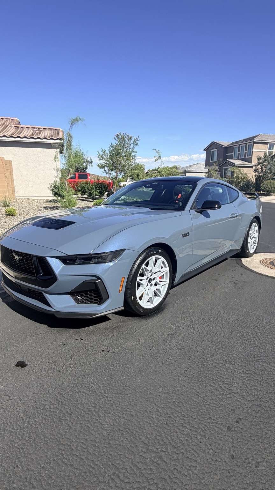
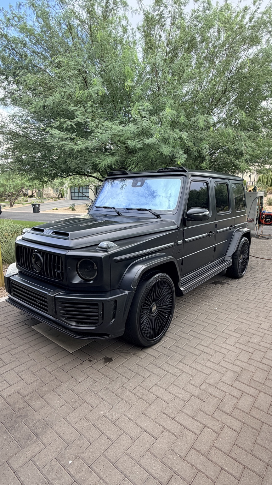

Detailing Services
Professional interior and exterior vehicle care delivered directly to your home or workplace.
Choose the Right Level of Care
Every vehicle has different needs. Apex Mobile Detailing offers multiple service levels so customers can choose the amount of cleaning, restoration, and protection that fits their vehicle.
| Service | Best For | Includes | Estimated Time |
|---|---|---|---|
| Essential Detail | Well-maintained vehicles | Exterior wash, wheels, vacuum, interior wipe-down, glass and tires | 1–2 hours |
| Complete Detail | Vehicles needing deeper cleaning | Essential service plus deeper interior and exterior cleaning | 2–4 hours |
| Premium Detail | Vehicles needing extensive attention | Comprehensive detailing with additional paint and interior care | 4+ hours |

Exterior Detailing
Exterior detailing focuses on safely removing dirt and road contamination while improving the appearance of the paint, wheels, tires, glass, and exterior trim.
- Hand wash and exterior cleaning
- Wheel and tire cleaning
- Exterior glass cleaning
- Tire and trim finishing
- Paint protection options
Interior Detailing
Interior services help remove dust, debris, and buildup from frequently used surfaces while improving the overall appearance and comfort of the vehicle.
- Thorough vacuuming
- Dash, console, and surface cleaning
- Interior glass cleaning
- Floor and cargo-area cleaning
- Detailed finishing of high-touch areas

Not Sure Which Service You Need?
Tell us about your vehicle and we can help determine the right option.
Request Service